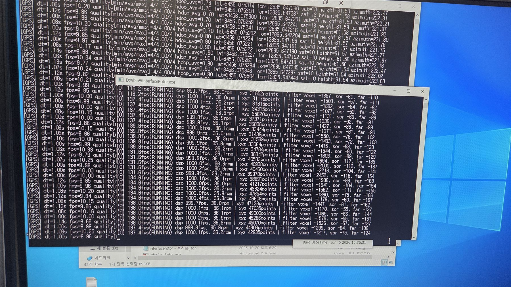

엔코더/DSP 값이 몇 Hz로 왔는지만 보였다.
엔코더 / DSP
UDP 6001
PC FPS
수신률이 낮아진 사실은 보이지만, FW 송신·스위치 drop·PC 수신 중 어디가 원인인지는 분리되지 않았습니다.
기존 콘솔은 6001로 들어온 DSP/FPS/RPM 상태를 보여준다. 하지만 그 숫자만으로는 FW가 못 보낸 것인지, LAN9354가 버린 것인지, PC가 놓친 것인지 바로 갈리지 않는다.

DSP가 997 Hz로 보이거나 갑자기 낮아졌다는 사실은 알 수 있다. 문제는 그 순간 어디에서 처음 무너졌는지다.
외부 PC 케이블, LiDAR 슬립링 경로, STM32 RMII가 모두 LAN9354에 모입니다. 6002 diag는 이 세 갈래와 스위치 내부 상태를 같은 시각에 남깁니다.
Port2/B, Port1/A, Port0/RMII가 실제 보드에서 갈라지는 세 경로입니다. Fabric과 PTP는 그 위에 얹히는 논리 판정입니다.
UDP 번호는 구현 세부입니다. 핵심은 단일 FPS 관측에서 경로별 증거 기록으로 바뀐 점입니다.
수신률이 낮아진 사실은 보이지만, FW 송신·스위치 drop·PC 수신 중 어디가 원인인지는 분리되지 않았습니다.
FW TX, PHY state, switch counter, BM drop, PC 수신률을 묶어서 어느 경로가 먼저 흔들렸는지 남깁니다.
STM32 송신 루프가 밀렸거나 ETH DMA/TX가 실패하면 PC에 도착하지 않는 것이 당연하다. 이때는 FW 내부 카운터부터 줄거나 실패가 증가해야 한다.
FW는 6001을 보냈지만 LAN9354 fabric이나 buffer manager가 Port0→Port1 패킷을 drop할 수 있다. 이 경우 PC 수신률만 낮아진다.
LAN9354 Port1 TX까지 정상인데 앱의 소켓 버퍼, 스케줄링, FPS 계산이 흔들리면 diaglog만 낮게 보인다. Wireshark와 PC RX 카운터로 분리한다.
6002는 DSP 데이터를 고치지 않는다. 같은 시각대의 관측값을 묶어 CSV에 남겨, 나중에 원인 후보를 줄이는 역할만 한다.